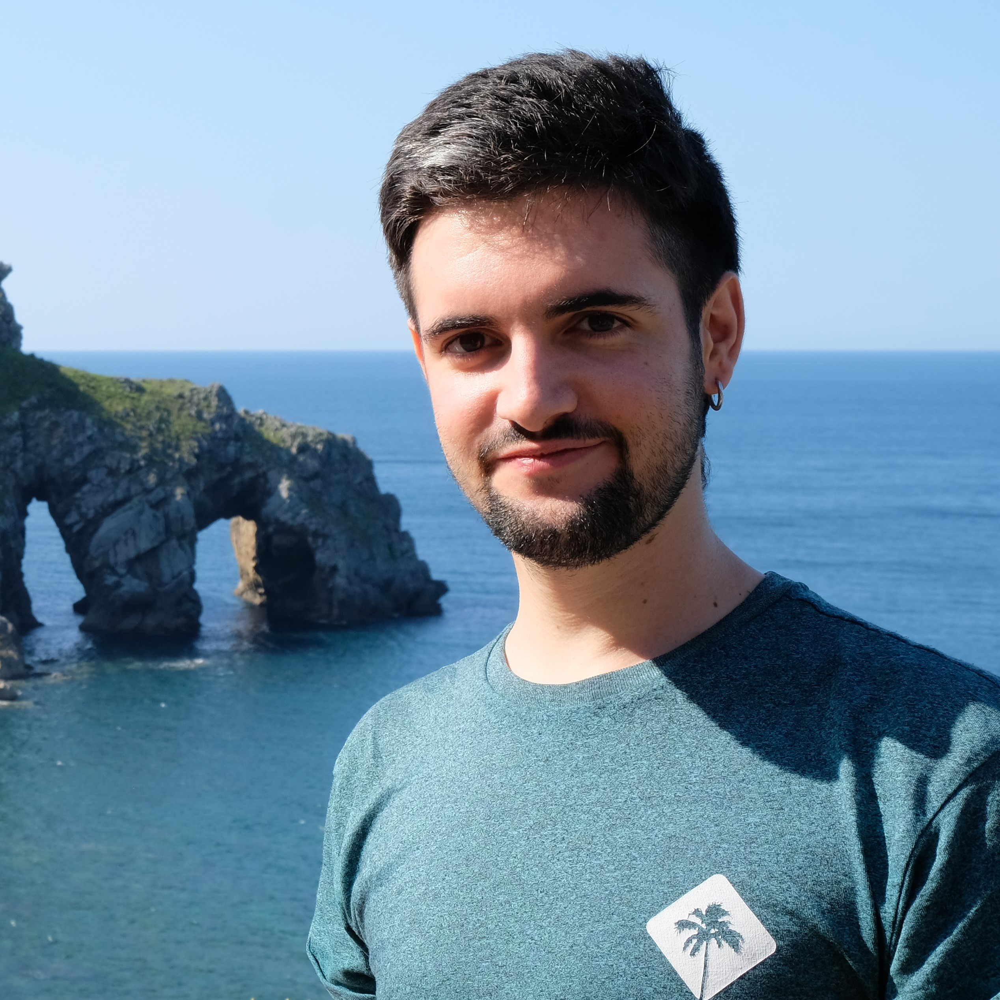
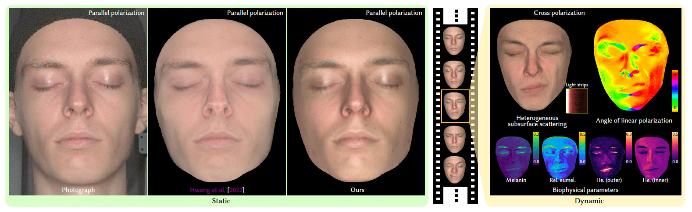
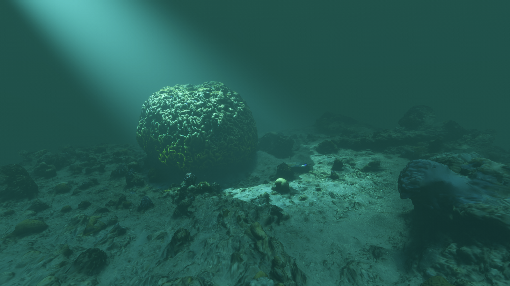

Nestor Monzon

I'm a PhD student at the Graphics and Imaging Lab at the University of Zaragoza. I'm under the supervision of Diego Gutierrez and Adolfo Muñoz.
My research interests include light transport simulation and forward/inverse rendering, especially participating media. I also work on variance reduction techniques, implicit surfaces, and related problems in physically based rendering.
Publications

Polarimetric BSSRDF Acquisition of Dynamic Faces
ACM Transactions on Graphics (TOG) (SIGGRAPH Asia 2024)

Real-Time Underwater Spectral Rendering
Computer Graphics Forum (Eurographics 2024)
We present a simplification of multiple scattering as a function of depth that allows for real-time underwater spectral rendering.
Supervision
Real-time rendering engine for implicit surfaces using sparse structures
Feb 2026 - Present
Study of variance reduction techniques to accelerate convergence in Monte Carlo rendering
Feb 2026 - Present
Techniques for Real-Time Spectral Rendering
Feb-Jul 2024
Teaching
| Subject | Degree | Period(s) |
|---|---|---|
| Modeling and Simulation of Appearance | Master in Robotics, Graphics and Computer Vision | Fall 2024, 2025, 2026 |
| Computational Imaging | Master in Robotics, Graphics and Computer Vision | Spring 2026, 2027 |